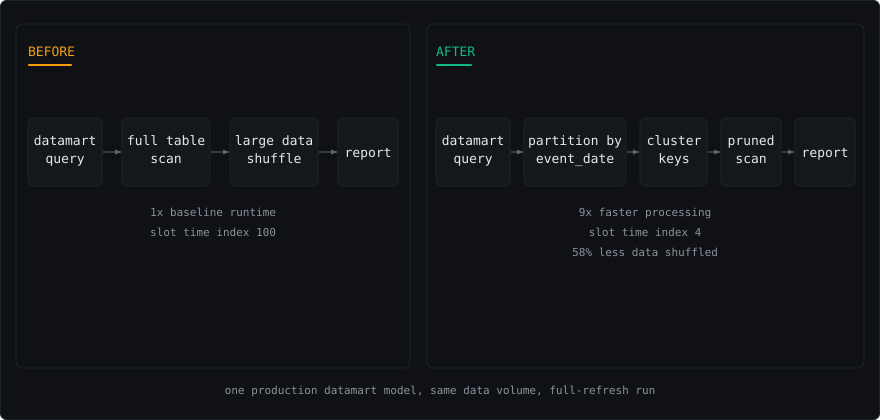

Problem and constraints
A critical datamart query was consuming 96%+ of BigQuery slot time, bottlenecking every report downstream of it and driving cloud cost up.
Approach
Read EXPLAIN ANALYZE output to find full table scans. Redesigned partitioning on event_date, added clustering keys on the high-cardinality filter columns, and restructured CTEs to reduce data shuffled.
Architecture

Measured result
The same model and data volume now runs 9x faster, with 96% less slot time and 58% less data shuffled, and overall pipeline efficiency up 30%.
| What | Value | Scope and source |
|---|---|---|
| faster processing | 9x | one production datamart model, same data volume, full-refresh run |
| less BigQuery slot time | 96% | same model and query, measured before and after the rewrite |
| less data shuffled | 58% | after repartitioning on event_date and adding clustering keys |
| overall pipeline efficiency gain | 30% | across the reporting layer the model feeds |